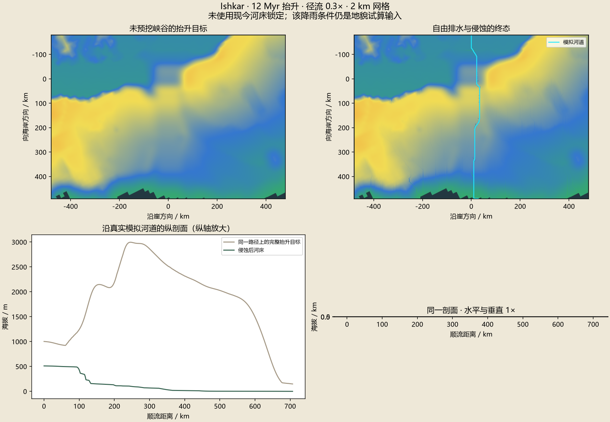
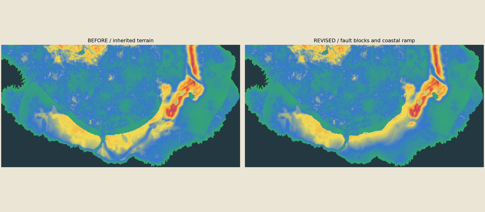

上一轮底稿
ROCK, WATER & DEEP TIME
高原展开，河流寻找出路
已封存的地形旁，加入中小台地、岩脊与两极山群。沿同一色标比较百万年级侵蚀；Ishkar 另用完整海岸边界检验能否穿过 Orun。
候选地形 · 本地烘焙 · 正式地图保持现状
局部权重画笔 · 调整下一轮模拟
过程强度：1× 保持，0× 关闭，2× 加强；弯折画笔控制偏移方向与幅度。画笔不会解除已锁定的故事场景；额外保护可用擦除恢复。
固定高程色标：0 m 绿 · 1,600 蓝 · 3,200 黄 · 4,800 橙 · 6,400 红 · 8,000 紫。深灰蓝为海洋。
候选结果
同一份数值高程
正在载入烘焙结果…
Ishkar 的形成与路线
对比先有河再抬升、断裂辅助和高原先形成。河流允许自行转弯，现今河床不锁定。海岸窗口的结果与旧窄窗口分开保存；Riverbend 的近河位置仍是候选。

Orun 高原修订对照

Orun 由分段正断层与区域抬升共同重建，背坡延伸至海岸方向。两端、Ishkar 干流、Riverbend 与 Windbreak 核心保留。先用粗网格与画笔比较形状，再做细部计算。
计算方式与可下载结果
七个叙事级板块约束次级断裂的方向与活动方式。图块和真实高程提供局部形态；绝对海拔由数值场决定。大陆水流与泥沙使用守恒求解，局部细网格使用 Landlab 岩层、风化、侵蚀沉积与坡面模型。
10万、50万、200万年是有效模型时间。当前降水、温度等图层仅用于地貌试算；真实气候将由 ExoPlaSim 三维环流烘焙。Linux 运行环境尚待 Windows 重启，页面没有把估计图当作环流结果。无植被的岩地预览也不表示移除了既有生态。
页面只读取已烘焙的数据。原始米数、全尺寸过程场、参数、素材指纹和逐轮收支留在本地；网页使用较小的纹理与网格。